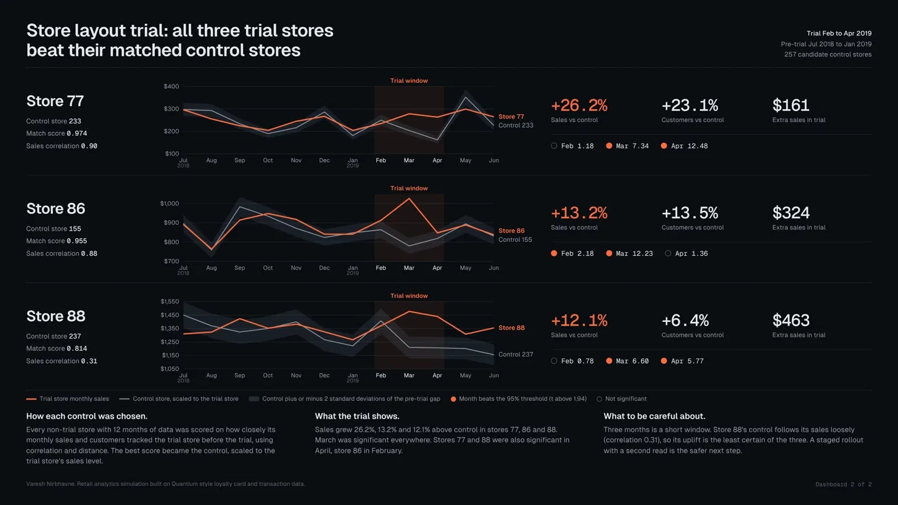

Did the trial stores really lift sales?
A retailer tries something in a few stores. Did sales move because of it, or would they have moved anyway? Control stores are how you tell the difference.

- +26.2%sales uplift, store 77 vs control
- 58.0%of sales from the three older lifestages
- 52.2%of sales from the top 25% of customers
The question
For a chips category manager: did the trial in selected stores produce a real uplift in sales?
What I did
- Explored transaction and customer data to understand how people buy chips.
- Matched each trial store to control stores using normalised Euclidean distance.
- Tested uplift with a difference in differences approach.
- Presented the story in a client-facing PowerPoint structured with the Pyramid Principle.
What I found
- All three trial stores beat their matched controls: +26.2% (store 77), +13.2% (store 86) and +12.1% (store 88) in sales.
- Store 88's control follows it loosely (correlation 0.31), so its uplift is the least certain. A staged rollout with a second read is the safer next step.
- In the category, older singles/couples, retirees and older families deliver 58.0% of sales, and the top 25% of customers drive 52.2% of them.
- A fair comparison group has to come before any claim about uplift.
- A finding only matters once it is framed as a decision the client can make.
About this project
Completed through the Quantium Data Science virtual experience on Forage. Not affiliated with or endorsed by Quantium.
- Control store matching
- Uplift testing
- Pyramid Principle
- Retail analytics
